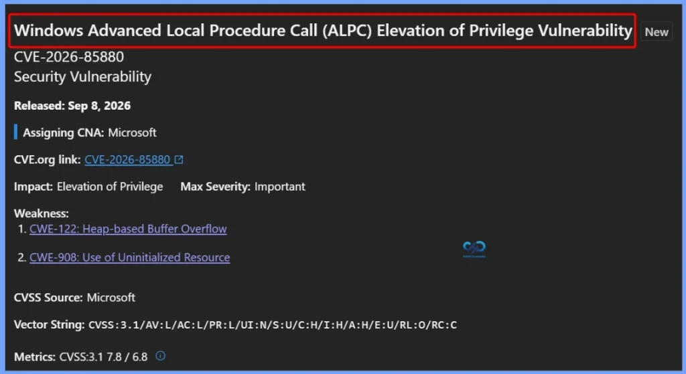
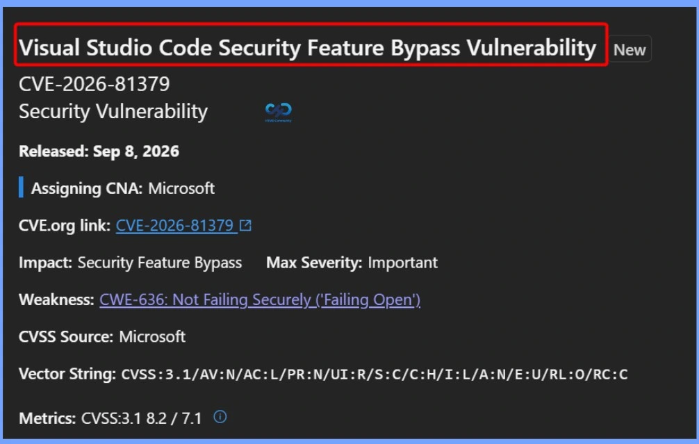
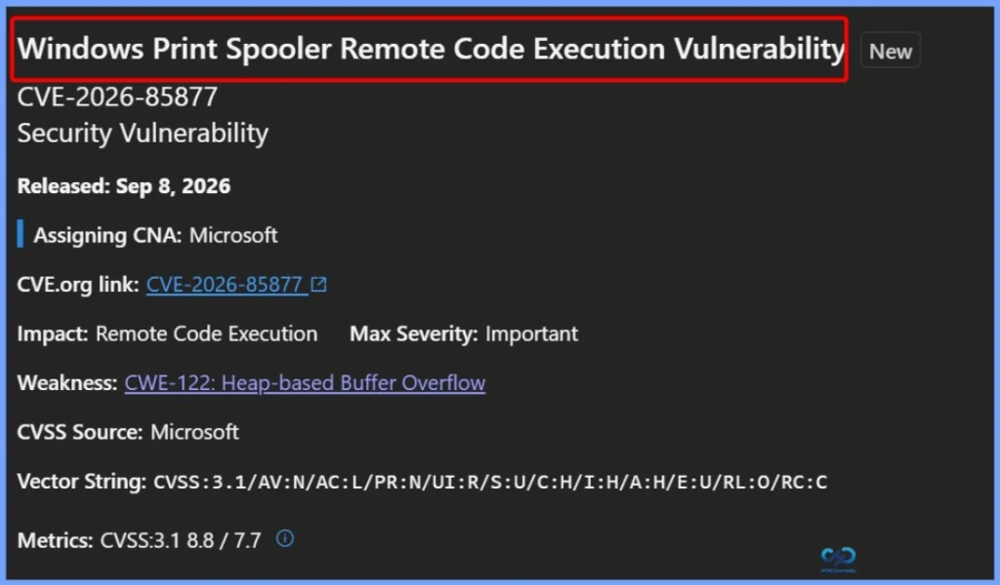
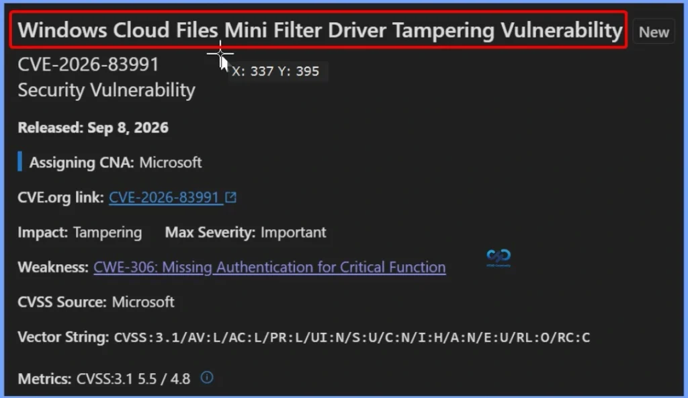
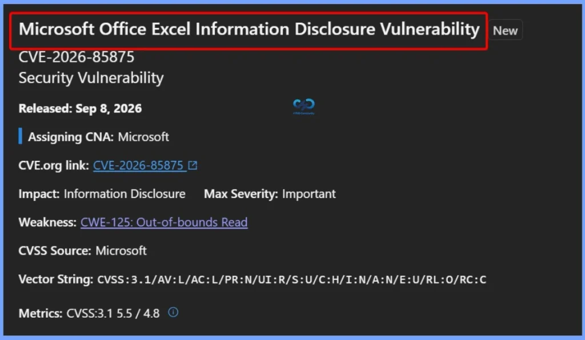
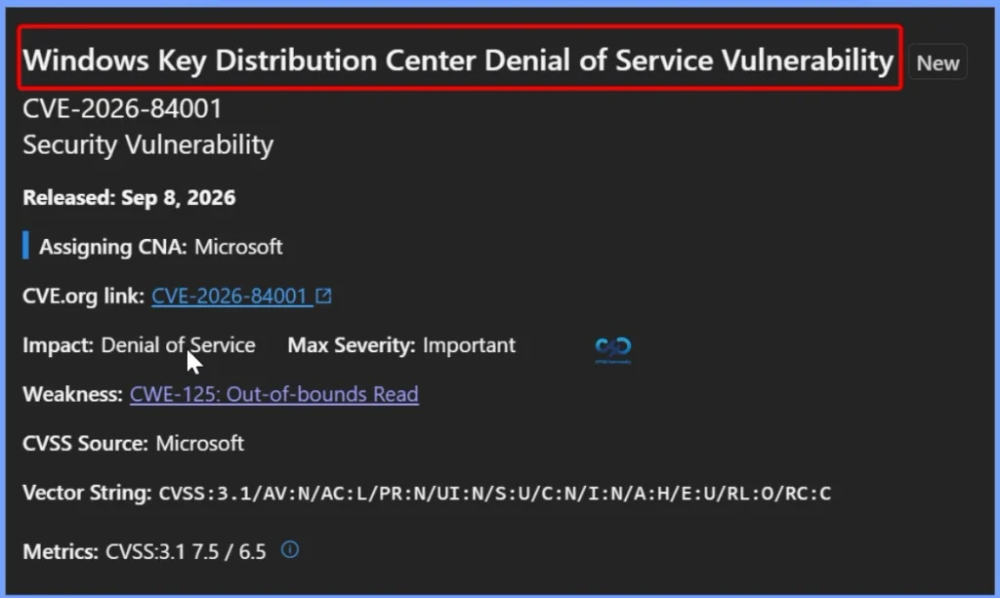
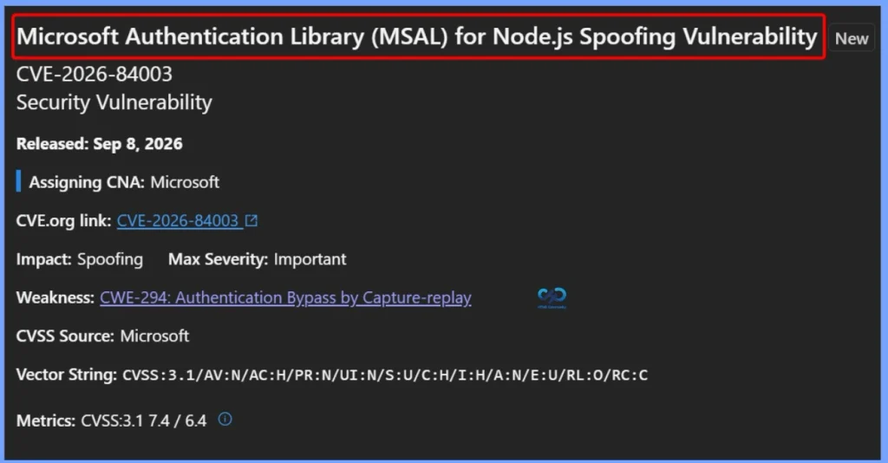

Key Takeaways
- Microsoft identified 973 vulnerabilities across multiple security categories.
- 2 zero-day vulnerabilities were actively exploited before the patches were released.
- 438 Elevation of Privilege vulnerabilities represent the largest category.
- 258 Remote Code Execution (RCE) vulnerabilities could allow attackers to execute malicious code remotely.
- 173 Information Disclosure vulnerabilities could expose sensitive information.
- 56 Denial of Service (DoS) vulnerabilities could impact system availability.
- 19 Security Feature Bypass vulnerabilities could let attackers circumvent security controls.
- 16 Spoofing vulnerabilities could enable attackers to impersonate users or systems.
- 13 Tampering vulnerabilities could allow unauthorised modification of data or configurations.
Microsoft Fixes 973 Security Vulnerabilities and 2 Zero-Day Vulnerabilities in September 2026 Patch Tuesday! Microsoft released the September 8, 2026 security updates for several Windows 11 versions. For Windows 11 25H2 and 24H2, the update is KB5124008 (OS Builds 26200.9445 and 26100.9445). For Windows 11 26H1, the update is KB5124012 (OS Build 28000.2954), while Windows 11 23H2 receives KB5122880 (OS Build 22621.7582). These updates include important security fixes and should be installed to keep Windows devices secure and up to date.
Table of Content
Microsoft Fixes 973 Security Vulnerabilities and 2 Zero-Day Vulnerabilities in September 2026 Patch Tuesday
Microsoft identified 973 security vulnerabilities across various categories. The vulnerabilities include 438 Elevation of Privilege, 258 Remote Code Execution, 173 Information Disclosure, 56 Denial of Service, 19 Security Feature Bypass, 16 Spoofing, and 13 Tampering vulnerabilities. These findings highlight the importance of timely security updates and patching to reduce the risk of privilege escalation, unauthorised code execution, data exposure, and other threats.
| 973 Security Vulnerabilities |
|---|
| 438 Elevation of Privilege Vulnerabilities 19 Security Feature Bypass Vulnerabilities 258 Remote Code Execution Vulnerabilities 173 Information Disclosure Vulnerabilities 56 Denial of Service Vulnerabilities 16 Spoofing Vulnerabilities 13 Tampering Vulnerabilities |

438 Elevation of Privilege Vulnerabilities
A total of 438 Elevation of Privilege vulnerabilities were identified. These include issues in the Windows Kernel, NTFS, Biometric Service, Graphics Component, Error Reporting, ALPC, and ReFS Deduplication Service. If exploited, these vulnerabilities could allow an attacker to gain higher-level access or permissions on a system.
- CVE-2026-85880 Windows Advanced Local Procedure Call (ALPC) Elevation of Privilege Vulnerability
- CVE-2026-85360 Windows Kernel Elevation of Privilege Vulnerability
- CVE-2026-83999 Windows Resilient File System (ReFS) Deduplication Service Elevation of Privilege Vulnerability
- CVE-2026-83996 Windows Error Reporting Elevation of Privilege Vulnerability
- CVE-2026-83995 Windows NTFS Elevation of Privilege Vulnerability
- CVE-2026-83990 Microsoft Graphics Component Elevation of Privilege Vulnerability
- CVE-2026-83988 Windows Biometric Service Elevation of Privilege Vulnerability
- CVE-2026-83987 Windows Biometric Service Elevation of Privilege Vulnerability
- CVE-2026-83986 Windows Biometric Service Elevation of Privilege Vulnerability
- CVE-2026-83985 Windows Biometric Service Elevation of Privilege Vulnerability
- CVE-2026-83983 Windows Biometric Service Elevation of Privilege Vulnerability
- CVE-2026-83982 Windows Biometric Service Elevation of Privilege Vulnerability
- CVE-2026-83981 Windows Biometric Service Elevation of Privilege Vulnerability
- CVE-2026-83980 Windows Biometric Service Elevation of Privilege Vulnerability
- CVE-2026-83979 Windows Biometric Service Elevation of Privilege Vulnerability
- CVE-2026-83978 Windows Biometric Service Elevation of Privilege Vulnerability
- CVE-2026-83977 Windows Biometric Service Elevation of Privilege Vulnerability
- CVE-2026-83976 Windows Biometric Service Elevation of Privilege Vulnerability
- CVE-2026-83975 Windows Biometric Service Elevation of Privilege Vulnerability
- CVE-2026-83974 Windows Biometric Service Elevation of Privilege Vulnerability
- CVE-2026-83973 Windows Biometric Service Elevation of Privilege Vulnerability
- CVE-2026-83972 Windows Biometric Service Elevation of Privilege Vulnerability
- CVE-2026-83971 Windows Biometric Service Elevation of Privilege Vulnerability
- CVE-2026-83970 Windows Biometric Service Elevation of Privilege Vulnerability
- CVE-2026-83969 Windows Biometric Service Elevation of Privilege Vulnerability
- CVE-2026-83968 Windows Biometric Service Elevation of Privilege Vulnerability
- CVE-2026-83967 Windows Biometric Service Elevation of Privilege Vulnerability
- CVE-2026-83955 Windows Biometric Service Elevation of Privilege Vulnerability
- CVE-2026-83954 Windows Biometric Service Elevation of Privilege Vulnerability
- CVE-2026-83952 Windows Resilient File System (ReFS) Elevation of Privilege Vulnerability CVE-2026-83942 Windows Kernel Elevation of Privilege Vulnerability
- CVE-2026-83941 Entra ID Elevation of Privilege Vulnerability
- CVE-2026-83940 Windows Device Association Service Elevation of Privilege Vulnerability
- CVE-2026-83939 Windows Secure Kernel Mode Elevation of Privilege Vulnerability
- CVE-2026-83711 Microsoft Azure Active Directory B2C Elevation of Privilege Vulnerability CVE-2026-83498 Windows Virtualization-Based Security (VBS) Enclave Elevation of Privilege Vulnerability
- CVE-2026-81963 Windows Update Stack Elevation of Privilege Vulnerability
- CVE-2026-81354 Windows Hello Elevation of Privilege Vulnerability
- CVE-2026-81349 Azure HDInsight Ambari Elevation of Privilege Vulnerability
- CVE-2026-80098 Copilot Studio Elevation of Privilege Vulnerability
- CVE-2026-80097 Microsoft Authenticator Elevation of Privilege Vulnerability
- CVE-2026-80096 Windows Remote Desktop Services Elevation of Privilege Vulnerability
- CVE-2026-80093 Windows Cloud Files Mini Filter Driver Elevation of Privilege Vulnerability
- CVE-2026-80075 Windows Work Folders Elevation of Privilege Vulnerability
- CVE-2026-78464 Windows MIDI Service Module Elevation of Privileges Vulnerability
- CVE-2026-78457 Windows Security Health Service Elevation of Privilege Vulnerability
- CVE-2026-78451 Microsoft Windows SCSI Class System File Elevation of Privilege Vulnerability
- CVE-2026-78448 Windows Biometric Service Elevation of Privilege Vulnerability
- CVE-2026-78447 Windows Biometric Service Elevation of Privilege Vulnerability
- CVE-2026-77905 Windows Management Instrumentation Elevation of Privilege Vulnerability
- CVE-2026-77904 Windows Volume Manager Extension Driver Elevation of Privilege Vulnerability
- CVE-2026-77899 Windows Security Center Elevation of Privilege Vulnerability
- CVE-2026-77897 Microsoft Power Automate Desktop Elevation of Privilege Vulnerability
- CVE-2026-77894 Windows Installer Elevation of Privilege Vulnerability
- CVE-2026-77503 Windows NTFS Elevation of Privilege Vulnerability
- CVE-2026-77500 Windows Device Association Service Elevation of Privilege Vulnerability
- CVE-2026-77492 Windows Storage Port Driver Information Disclosure Vulnerability
- CVE-2026-77489 Windows Biometric Service Elevation of Privilege Vulnerability
- CVE-2026-77487 SQL Server Elevation of Privilege Vulnerability
- CVE-2026-77485 SQL Server Elevation of Privilege Vulnerability
- CVE-2026-77483 SQL Server Elevation of Privilege Vulnerability
- CVE-2026-77480 SQL Server Elevation of Privilege Vulnerability
- CVE-2026-73028 SQL Server Elevation of Privilege Vulnerability
- CVE-2026-73026 Windows Biometric Service Elevation of Privilege Vulnerability
- CVE-2026-73024 Windows Services for NFS ONCRPC XDR Driver Elevation of Privilege Vulnerability
- CVE-2026-73022 Windows Modern Device Management (MDM) Elevation of Privilege Vulnerability
- CVE-2026-73021 Windows Biometric Service Elevation of Privilege Vulnerability
- CVE-2026-73020 Windows Biometric Service Elevation of Privilege Vulnerability
- CVE-2026-73015 Windows Biometric Service Elevation of Privilege Vulnerability
- CVE-2026-73014 Data Sharing Service Client Elevation of Privilege Vulnerability
- CVE-2026-73012 Windows Management Services Elevation of Privilege Vulnerability
- CVE-2026-73011 Windows Biometric Service Elevation of Privilege Vulnerability
- CVE-2026-73007 Windows Biometric Service Elevation of Privilege Vulnerability
- CVE-2026-73005 Windows Authentication Methods Elevation of Privilege Vulnerability CVE-2026-73003 Windows Modern Device Management (MDM) Elevation of Privilege Vulnerability
- CVE-2026-73002 Windows Biometric Service Elevation of Privilege Vulnerability
- CVE-2026-73001 Windows Biometric Service Elevation of Privilege Vulnerability
- CVE-2026-73000 Windows Biometric Service Elevation of Privilege Vulnerability
- CVE-2026-72999 Windows USB Hub Driver Elevation of Privilege Vulnerability
- CVE-2026-72997 Windows Biometric Service Elevation of Privilege Vulnerability
- CVE-2026-72996 Windows Biometric Service Elevation of Privilege Vulnerability
- CVE-2026-72995 Windows Biometric Service Elevation of Privilege Vulnerability
- CVE-2026-72994 Windows Biometric Service Elevation of Privilege Vulnerability
- CVE-2026-72993 Windows Biometric Service Elevation of Privilege Vulnerability
- CVE-2026-72992 Windows Biometric Service Elevation of Privilege Vulnerability
- CVE-2026-72991 Windows Biometric Service Elevation of Privilege Vulnerability
- CVE-2026-72990 Windows Biometric Service Elevation of Privilege Vulnerability
- CVE-2026-72988 Windows Biometric Service Elevation of Privilege Vulnerability
- CVE-2026-72985 Volume Shadow Copy Elevation of Privilege Vulnerability
- CVE-2026-72967 Windows Network Connection Broker Elevation of Privilege Vulnerability
- CVE-2026-72965 Windows WebClient Service Elevation of Privilege Vulnerability
- CVE-2026-72963 Windows Modern Execution Server Elevation of Privilege Vulnerability CVE-2026-72962 Windows USB Video Driver Elevation of Privilege Vulnerability
- CVE-2026-72961 Windows Hyper-V Elevation of Privilege Vulnerability
- CVE-2026-72958 Windows Credential Guard Elevation of Privilege Vulnerability
- CVE-2026-72953 Windows USB Driver Elevation of Privilege Vulnerability
- CVE-2026-72948 Windows DNS Elevation of Privilege Vulnerability
- CVE-2026-72947 Windows File History Service Elevation of Privilege Vulnerability
- CVE-2026-72946 Microsoft Storage Port Driver Elevation of Privilege Vulnerability
- CVE-2026-72944 Role: Windows Fax Service Elevation of Privilege Vulnerability
- CVE-2026-72941 Windows Biometric Service Elevation of Privilege Vulnerability
- CVE-2026-72935 Windows NTFS Elevation of Privilege Vulnerability
- CVE-2026-72929 Windows Installer Elevation of Privilege Vulnerability
- CVE-2026-72927 Winsock Elevation of Privilege Vulnerability
- CVE-2026-72926 Windows Internet Connection Sharing (ICS) Elevation of Privilege Vulnerability
- CVE-2026-71353 Windows Routing and Remote Access Service (RRAS) Elevation of Privilege Vulnerability
- CVE-2026-71351 Windows Routing and Remote Access Service (RRAS) Elevation of Privilege Vulnerability
- CVE-2026-71342 Windows Remote Access Connection Manager Elevation of Privilege Vulnerability
- CVE-2026-71340 Windows File History Service Elevation of Privilege Vulnerability
- CVE-2026-71339 Windows Installer Elevation of Privilege Vulnerability
- CVE-2026-71338 Windows Failover Cluster Elevation of Privilege Vulnerability
- CVE-2026-71337 Windows Storage Management Provider Elevation of Privilege Vulnerability
- CVE-2026-71334 Windows NFS Portmapper Elevation of Privilege Vulnerability
- CVE-2026-71333 Windows Remote Access Connection Manager Elevation of Privilege Vulnerability
- CVE-2026-71332 Windows Secure Socket Tunneling Protocol (SSTP) Elevation of Privilege Vulnerability
- CVE-2026-70584 Windows Core Messaging Elevation of Privilege Vulnerability
- CVE-2026-70583 Windows Core Messaging Elevation of Privilege Vulnerability
- CVE-2026-70582 Windows Management Instrumentation Elevation of Privilege Vulnerability
- CVE-2026-70581 Windows Biometric Service Elevation of Privilege Vulnerability
- CVE-2026-70578 Windows Credential Guard Elevation of Privilege Vulnerability
- CVE-2026-70577 Windows Modern Device Management (MDM) Elevation of Privilege Vulnerability
- CVE-2026-70574 Virtual Hard Disk (VHD) Miniport Driver Elevation of Privilege Vulernability
- CVE-2026-70573 Windows Biometric Service Elevation of Privilege Vulnerability
- CVE-2026-70572 Windows Biometric Service Elevation of Privilege Vulnerability
- CVE-2026-70569 Windows Spaceport.sys Elevation of Privilege Vulnerability
- CVE-2026-70568 Windows Defender Firewall Service Elevation of Privilege Vulnerability CVE-2026-70567 Windows Display Enhancement Service Elevation of Privilege Vulnerability
- CVE-2026-70565 Windows AF_UNIX Socket Provider Elevation of Privilege Vulnerability
- CVE-2026-70564 Windows Print Spooler Components Elevation of Privilege Vulnerability
- CVE-2026-70562 Windows Audio Service Elevation of Privilege Vulnerability
- CVE-2026-70352 Azure AI Language Elevation of Privilege Vulnerability
- CVE-2026-70342 Windows Ancillary Function Driver for WinSock Elevation of Privilege Vulnerability
- CVE-2026-70289 Windows Win32k Elevation of Privilege Vulnerability
- CVE-2026-70283 Windows Win32k Elevation of Privilege Vulnerability
- CVE-2026-70178 Microsoft Fabric Elevation of Privilege Vulnerability
- CVE-2026-69921 Windows Print Spooler Components Elevation of Privilege Vulnerability CVE-2026-69911 Microsoft Windows Search Component Elevation of Privilege Vulnerability
- CVE-2026-69907 Windows Enterprise App Management Elevation of Privilege Vulnerability
- CVE-2026-69906 Windows Secure Kernel Mode Elevation of Privilege Vulnerability
- CVE-2026-69900 Kernel Streaming WOW Thunk Service Driver Elevation of Privilege Vulnerability
- CVE-2026-69896 Windows Error Reporting Elevation of Privilege Vulnerability
- CVE-2026-69891 Windows Media Elevation of Privilege Vulnerability
- CVE-2026-69890 Windows Virtual Trusted Platform Module Elevation of Privilege Vulnerability
- CVE-2026-69889 Windows Bluetooth Service Elevation of Privilege Vulnerability
- CVE-2026-69875 Windows NTFS Elevation of Privilege Vulnerability
- CVE-2026-69874 Windows ALPC Elevation of Privilege Vulnerability
- CVE-2026-69866 Windows Device Association Service Elevation of Privilege Vulnerability
- CVE-2026-69864 Windows Hello Elevation of Privilege Vulnerability
- CVE-2026-69859 Windows USB Audio Class driver (usbaudio.sys) Elevation of Privilege Vulnerability
- CVE-2026-69854 Spring Cloud Azure Elevation of Privilege Vulnerability
- CVE-2026-69846 Windows Secure Kernel Mode Elevation of Privilege Vulnerability
- CVE-2026-69844 Windows Win32k Elevation of Privilege Vulnerability
- CVE-2026-69841 Windows Encrypting File System (EFS) Elevation of Privilege Vulnerability
- CVE-2026-69838 Windows Print Spooler Components Elevation of Privilege Vulnerability
- CVE-2026-69834 Windows ALPC Elevation of Privilege Vulnerability
- CVE-2026-69826 Windows Biometric Service Elevation of Privilege Vulnerability
- CVE-2026-69822 Windows Kerberos Elevation of Privilege Vulnerability
- CVE-2026-69821 Active Directory Certificate Services (AD CS) Elevation of Privilege Vulnerability
- CVE-2026-69820 Windows Hello Elevation of Privilege Vulnerability
- CVE-2026-69818 Windows Win32k Elevation of Privilege Vulnerability
- CVE-2026-69817 Windows Bluetooth Port Driver Elevation of Privilege Vulnerability
- CVE-2026-69816 Windows Accounts Control Elevation of Privilege Vulnerability
- CVE-2026-69814 Windows Credential Providers Elevation of Privilege Vulnerability
- CVE-2026-69807 PowerShell Elevation of Privilege Vulnerability
- CVE-2026-69806 .NET Elevation of Privilege Vulnerability
- CVE-2026-69805 .NET Elevation of Vulnerability
- CVE-2026-69801 Windows Audio Service Elevation of Privilege Vulnerability
- CVE-2026-69799 Windows Hello Elevation of Privilege Vulnerability
- CVE-2026-69791 Windows Device Association Service Elevation of Privilege Vulnerability
- CVE-2026-69790 Windows Credential Providers Elevation of Privilege Vulnerability
- CVE-2026-69787 Windows Biometric Service Elevation of Privilege Vulnerability
- CVE-2026-69785 Windows Smart Card Elevation of Privilege Vulnerability
- CVE-2026-69784 Windows Hello Elevation of Privilege Vulnerability
- CVE-2026-69779 Windows Win32k Elevation of Privilege Vulnerability
- CVE-2026-69777 Windows DHCP Client Elevation of Privilege Vulnerability
- CVE-2026-69775 Windows DWM Core Library Elevation of Privilege Vulnerability
- CVE-2026-69773 Windows Biometric Service Elevation of Privilege Vulnerability
- CVE-2026-69762 Windows Win32k Elevation of Privilege Vulnerability
- CVE-2026-69761 Windows TCP/IP Elevation of Privilege Vulnerability
- CVE-2026-69758 Windows Universal Disk Format File System Driver (UDFS) Elevation of Privilege Vulnerability
- CVE-2026-69757 Windows TCP/IP Elevation of Privilege Vulnerability
- CVE-2026-69740 Windows Hello Elevation of Privilege Vulnerability
- CVE-2026-69738 Windows Biometric Service Elevation of Privilege Vulnerability
- CVE-2026-69735 Windows Broadcast DVR User Service Elevation of Privilege Vulnerability
- CVE-2026-69731 HID Class Driver Elevation of Privilege Vulnerability
- CVE-2026-69727 Windows Biometric Service Elevation of Privilege Vulnerability CVE-2026-69725 Windows Hello Elevation of Privilege Vulnerability
- CVE-2026-69720 Windows MIDI Service Module Elevation of Privileges Vulnerability
- CVE-2026-69717 Windows Group Policy Elevation of Privilege Vulnerability
- CVE-2026-69716 Microsoft Office SharePoint Elevation of Privilege Vulnerability
- CVE-2026-69714 Windows Device Association Service Elevation of Privilege Vulnerability
- CVE-2026-69711 Windows Device Association Service Elevation of Privilege Vulnerability
- CVE-2026-69710 Windows Hello Elevation of Privilege Vulnerability
- CVE-2026-69708 Windows Web Platform Storage Elevation of Privilege Vulnerability
- CVE-2026-69707 Windows USB Audio Class driver (usbaudio.sys) Elevation of Privilege Vulnerability
- CVE-2026-69706 Windows Win32k Elevation of Privilege Vulnerability
- CVE-2026-69694 Windows IP Address Management (IPAM) Service Elevation of Privilege Vulnerability
- CVE-2026-69693 Windows Device Association Broker Service Elevation of Privilege Vulnerability
- CVE-2026-69692 Windows Audio Service Elevation of Privilege Vulnerability
- CVE-2026-69691 Windows Spaceport.sys Elevation of Privilege Vulnerability
- CVE-2026-69689 Windows Win32k Elevation of Privilege Vulnerability
- CVE-2026-69688 Windows Encrypting File System (EFS) Elevation of Privilege Vulnerability
- CVE-2026-69687 Windows USB Audio Class driver (usbaudio.sys) Elevation of Privilege Vulnerability
- CVE-2026-69685 Windows Kerberos Elevation of Privilege Vulnerability
- CVE-2026-69682 Windows Host Guardian Service Elevation of Privilege Vulnerability
- CVE-2026-69681 Virtual Hard Disk (VHD) Miniport Driver Elevation of Privilege Vulernability
- CVE-2026-69654 Windows Accounts Control Elevation of Privilege Vulnerability
- CVE-2026-69652 Windows Win32k Elevation of Privilege Vulnerability
- CVE-2026-69648 Windows Notification Elevation of Privilege Vulnerability
- CVE-2026-69645 Windows Message Queuing Elevation of Privilege Vulnerability
- CVE-2026-69643 Windows Spaceport.sys Elevation of Privilege Vulnerability
- CVE-2026-69641 Microsoft Exchange Server Elevation of Privilege Vulnerability
- CVE-2026-69630 Windows Win32k Elevation of Privilege Vulnerability
- CVE-2026-69625 Connected User Experiences and Telemetry Elevation of Privilege Vulnerability
- CVE-2026-69621 Role: Windows Fax Service Elevation of Privilege Vulnerability
- CVE-2026-69619 Windows exFAT File System Elevation of Privilege Vulnerability
- CVE-2026-69617 Windows Resilient File System (ReFS) Elevation of Privilege Vulnerability
- CVE-2026-69613 Windows Image Acquisition Elevation of Privilege Vulnerability
- CVE-2026-69612 Windows Error Reporting Elevation of Privilege Vulnerability
- CVE-2026-69611 Virtual Hard Disk (VHD) Miniport Driver Elevation of Privilege Vulernability
- CVE-2026-69610 Windows Win32k Elevation of Privilege Vulnerability
- CVE-2026-69608 Microsoft Windows Search Component Elevation of Privilege Vulnerability
- CVE-2026-69606 Windows Shell Elevation of Privilege Vulnerability
- CVE-2026-69605 Microsoft Install Service Elevation of Privilege Vulnerability
- CVE-2026-69604 Windows Audio Service Elevation of Privilege Vulnerability
- CVE-2026-69602 Windows PrintWorkflowUserSvc Elevation of Privilege Vulnerability
- CVE-2026-69600 Microsoft Windows Search Component Elevation of Privilege Vulnerability
- CVE-2026-69597 Windows HTTP.sys Elevation of Privilege Vulnerability
- CVE-2026-69594 Microsoft Local Security Authority (LSA) Server Elevation of Privilege Vulnerability
- CVE-2026-69593 Windows Biometric Service Elevation of Privilege Vulnerability
- CVE-2026-69592 Windows Universal Disk Format File System Driver (UDFS) Elevation of Privilege Vulnerability
- CVE-2026-69589 Windows Biometric Service Elevation of Privilege Vulnerability
- CVE-2026-69585 Microsoft Windows Search Component Elevation of Privilege Vulnerability
- CVE-2026-69584 Windows USB Video Driver Elevation of Privilege Vulnerability
- CVE-2026-69583 Windows Biometric Service Elevation of Privilege Vulnerability
- CVE-2026-69582 Windows Volume Manager Extension Driver Elevation of Privilege Vulnerability
- CVE-2026-69581 Windows Device Association Service Elevation of Privilege Vulnerability
- CVE-2026-69580 Windows Biometric Service Elevation of Privilege Vulnerability
- CVE-2026-69578 Windows Kernel Elevation of Privilege Vulnerability
- CVE-2026-69576 Graphic Fonts Elevation of Privilege Vulnerability
- CVE-2026-69575 Windows Storage Spaces Controller Elevation of Privilege Vulnerability
- CVE-2026-69574 Windows Device Association Service Elevation of Privilege Vulnerability
- CVE-2026-69573 Windows Universal Disk Format File System Driver (UDFS) Elevation of Privilege Vulnerability
- CVE-2026-69571 Windows USB Audio Class driver (usbaudio.sys) Elevation of Privilege Vulnerability
- CVE-2026-69567 Windows NTFS Elevation of Privilege Vulnerability
- CVE-2026-69564 Windows Online Certificate Status Protocol (OCSP) Elevation of Privilege Vulnerability
- CVE-2026-69563 Windows Program Compatibility Assistant Service Elevation of Privilege Vulnerability
- CVE-2026-69561 Windows CD-ROM Driver Elevation of Privilege Vulnerability
- CVE-2026-69560 Windows Work Folder Service Elevation of Privilege Vulnerability
- CVE-2026-69553 Windows Hyper-V Elevation of Privilege Vulnerability
- CVE-2026-69549 Virtual Hard Disk (VHD) Miniport Driver Elevation of Privilege Vulernability
- CVE-2026-69544 Windows SMB Client Elevation of Privilege Vulnerability
- CVE-2026-69542 Windows Camera Frame Server Monitor Elevation of Privilege Vulnerability
- CVE-2026-69541 Virtual Hard Disk (VHD) Miniport Driver Elevation of Privilege Vulernability
- CVE-2026-69540 Windows Audio Service Elevation of Privilege Vulnerability
- CVE-2026-69535 Windows Spaceport.sys Elevation of Privilege Vulnerability
- CVE-2026-69534 Windows Program Compatibility Assistant Service Elevation of Privilege Vulnerability
- CVE-2026-69532 Windows NTFS Elevation of Privilege Vulnerability
- CVE-2026-69528 Windows Shell Elevation of Privilege Vulnerability
- CVE-2026-69517 Windows Wireless Networking Elevation of Privilege Vulnerability
- CVE-2026-69516 Connected Devices Platform Service (Cdpsvc) Elevation of Privilege Vulnerability
- CVE-2026-69513 Windows Error Reporting Elevation of Privilege Vulnerability
- CVE-2026-69512 Windows Spaceport.sys Elevation of Privilege Vulnerability
- CVE-2026-69509 Role: Windows Fax Service Elevation of Privilege Vulnerability
- CVE-2026-69508 Windows MIDI Service Module Elevation of Privileges Vulnerability
- CVE-2026-69505 Windows NTFS Elevation of Privilege Vulnerability
- CVE-2026-69503 Windows USB Driver Elevation of Privilege Vulnerability
- CVE-2026-69501 Windows Secure Kernel Mode Elevation of Privilege Vulnerability
- CVE-2026-69500 Windows Image Acquisition Elevation of Privilege Vulnerability
- CVE-2026-69498 Windows Win32k Elevation of Privilege Vulnerability
- CVE-2026-69492 Windows Partition Management Driver Elevation of Privilege Vulnerability
- CVE-2026-69490 Windows USB Mass Storage Class Driver Elevation of Privilege Vulnerability
- CVE-2026-69489 Windows Biometric Service Elevation of Privilege Vulnerability
- CVE-2026-69488 Windows Device Association Service Elevation of Privilege Vulnerability
- CVE-2026-69481 Windows Enterprise App Management Elevation of Privilege Vulnerability
- CVE-2026-69480 Windows Partition Management Driver Elevation of Privilege Vulnerability
- CVE-2026-69478 Windows Device Association Service Elevation of Privilege Vulnerability
- CVE-2026-69476 Windows Biometric Service Elevation of Privilege Vulnerability
- CVE-2026-69475 Windows Remote Desktop Services Elevation of Privilege Vulnerability
- CVE-2026-69473 Windows Kernel Elevation of Privilege Vulnerability
- CVE-2026-69472 Windows Devices Human Interface Elevation of Privilege Vulnerability
- CVE-2026-69470 Connected User Experiences and Telemetry Elevation of Privilege Vulnerability
- CVE-2026-69469 Windows USB Audio Class driver (usbaudio.sys) Elevation of Privilege Vulnerability
- CVE-2026-69468 Windows Volume Manager Extension Driver Elevation of Privilege Vulnerability
- CVE-2026-69467 Microsoft Graphics Component Elevation of Privilege Vulnerability
- CVE-2026-69466 Windows Kernel Elevation of Privilege Vulnerability
- CVE-2026-69464 Microsoft Office SharePoint Elevation of Privilege Vulnerability
- CVE-2026-69462 Windows Error Reporting Elevation of Privilege Vulnerability
- CVE-2026-69460 Windows Modern Device Management (MDM) Elevation of Privilege Vulnerability
- CVE-2026-69459 Windows Power Dependency Coordinator Elevation of Privilege Vulnerability
- CVE-2026-69458 Windows BitLocker Elevation of Privilege Vulnerability
- CVE-2026-69456 Microsoft Windows Speech Elevation of Privilege Vulnerability
- CVE-2026-69455 Windows Remote Access Connection Manager Elevation of Privilege Vulnerability
- CVE-2026-69451 Windows Management Instrumentation Elevation of Privilege Vulnerability
- CVE-2026-69450 Windows Error Reporting Elevation of Privilege Vulnerability
- CVE-2026-69448 Windows Bluetooth Service Elevation of Privilege Vulnerability
- CVE-2026-69447 Windows Audio Service Elevation of Privilege Vulnerability
- CVE-2026-69445 Windows Compressed Folder Elevation of Privilege Vulnerability
- CVE-2026-69444 Microsoft Windows Speech Elevation of Privilege Vulnerability
- CVE-2026-69441 Windows Installer Elevation of Privilege Vulnerability
- CVE-2026-69440 Windows MIDI Service Module Elevation of Privileges Vulnerability
- CVE-2026-69439 .NET and Visual Studio Elevation of Privilege Vulnerability
- CVE-2026-69436 Windows Error Reporting Elevation of Privilege Vulnerability
- CVE-2026-69433 Windows Error Reporting Elevation of Privilege Vulnerability
- CVE-2026-69432 Volume Manager Driver Elevation of Privilege Vulnerability
- CVE-2026-69430 Windows Embedded Mode Service Elevation of Privilege Vulnerability
- CVE-2026-69427 Microsoft VOLSNAP.SYS Elevation of Privilege Vulnerability
- CVE-2026-69424 Windows Distributed File System (DFS) Elevation of Privilege Vulnerabilit
- CVE-2026-69423 Windows USB Video Driver Elevation of Privilege Vulnerability
- CVE-2026-69422 Windows USB Video Driver Elevation of Privilege Vulnerability
- CVE-2026-69421 Windows Kernel-Mode Driver Elevation of Privilege Vulnerability
- CVE-2026-69420 Microsoft VOLSNAP.SYS Elevation of Privilege Vulnerability
- CVE-2026-69418 Volume Manager Driver Elevation of Privilege Vulnerability
- CVE-2026-69415 Windows DHCP Server Elevation of Privilege Vulnerability
- CVE-2026-69413 Windows USB Audio Class driver (usbaudio.sys) Elevation of Privilege Vulnerability
- CVE-2026-69410 Windows Win32k Elevation of Privilege Vulnerability
- CVE-2026-69407 Volume Manager Driver Elevation of Privilege Vulnerability
- CVE-2026-69404 Windows TCP/IP Elevation of Privilege Vulnerability
- CVE-2026-69401 Audio Video Control Transport Protocol Elevation of Privilege Vulnerability
- CVE-2026-69398 Windows Bluetooth Service Elevation of Privilege Vulnerability
- CVE-2026-69396 Windows NDIS Elevation of Privilege Vulnerability
- CVE-2026-69394 Windows Audio Service Elevation of Privilege Vulnerability
- CVE-2026-69392 Windows Shell Elevation of Privilege Vulnerability
- CVE-2026-69391 Windows Broker Infrastructure Service Elevation of Privilege Vulnerability
- CVE-2026-69389 Windows Storage Management Provider Elevation of Privilege Vulnerability
- CVE-2026-69388 Windows Bluetooth Service Elevation of Privilege Vulnerability
- CVE-2026-69385 Windows TCP/IP Elevation of Privilege Vulnerability
- CVE-2026-69383 Windows Shell Elevation of Privilege Vulnerability
- CVE-2026-69380 Microsoft Exchange Server Elevation of Privilege Vulnerability
- CVE-2026-69379 Windows NTFS Elevation of Privilege Vulnerability
- CVE-2026-69377 Windows Modern Device Management (MDM) Elevation of Privilege Vulnerability
- CVE-2026-69373 Windows Overlay Filter Elevation of Privilege Vulnerability
- CVE-2026-69371 Windows Overlay Filter Elevation of Privilege Vulnerability
- CVE-2026-69368 Windows Overlay Filter Elevation of Privilege Vulnerability
- CVE-2026-69366 Windows Kernel Elevation of Privilege Vulnerability
- CVE-2026-69365 Microsoft Local Security Authority (LSA) Server Elevation of Privilege Vulnerability
- CVE-2026-69364 Windows Print Spooler Components Elevation of Privilege Vulnerability
- CVE-2026-69362 Windows Error Reporting Elevation of Privilege Vulnerability
- CVE-2026-69359 Active Directory Domain Services Elevation of Privilege Vulnerability
- CVE-2026-69357 Windows NDIS Elevation of Privilege Vulnerability
- CVE-2026-69352 Windows Biometric Service Elevation of Privilege Vulnerability
- CVE-2026-69350 Windows Overlay Filter Elevation of Privilege Vulnerability
- CVE-2026-69348 Windows Win32k Elevation of Privilege Vulnerability
- CVE-2026-69346 Windows Print Spooler Components Elevation of Privilege Vulnerability
- CVE-2026-69341 Windows Image Acquisition Elevation of Privilege Vulnerability CVE-2026-69340 Windows NTFS Elevation of Privilege Vulnerability
- CVE-2026-69338 Remote Desktop Gateway Service Elevation of Privilege Vulnerability
- CVE-2026-69337 Windows Registry Elevation of Privilege Vulnerability
- CVE-2026-69336 Microsoft Standard XPS Elevation of Privilege Vulnerability
- CVE-2026-69335 Windows Win32k Elevation of Privilege Vulnerability
- CVE-2026-69333 Windows Win32k Elevation of Privilege Vulnerability
- CVE-2026-69332 Windows NTFS Elevation of Privilege Vulnerability
- CVE-2026-69331 Windows Remote Access Connection Manager Elevation of Privilege Vulnerability
- CVE-2026-69328 Windows Storage Elevation of Privilege Vulnerability
- CVE-2026-69324 Windows Performance Monitor Elevation of Privilege Vulnerability
- CVE-2026-69323 Windows Biometric Service Elevation of Privilege Vulnerability
- CVE-2026-69322 Microsoft Windows Search Component Elevation of Privilege Vulnerability
- CVE-2026-69319 Windows USB Video Driver Elevation of Privilege Vulnerability
- CVE-2026-69314 Windows Device Association Broker Service Elevation of Privilege Vulnerability
- CVE-2026-69313 Microsoft Standard XPS Elevation of Privilege Vulnerability
- CVE-2026-69312 Windows NTFS Elevation of Privilege Vulnerability
- CVE-2026-69311 Windows Audio Service Elevation of Privilege Vulnerability
- CVE-2026-69310 Windows DNS Elevation of Privilege Vulnerability
- CVE-2026-69309 Windows Print Spooler Components Elevation of Privilege Vulnerability
- CVE-2026-69307 Windows USB Audio Class driver (usbaudio.sys) Elevation of Privilege Vulnerability
- CVE-2026-69305 Microsoft Windows Search Component Elevation of Privilege Vulnerability
- CVE-2026-69301 Windows Win32k Elevation of Privilege Vulnerability
- CVE-2026-69300 Windows Push Notifications Elevation of Privilege Vulnerability
- CVE-2026-69299 Microsoft COM for Windows Elevation of Privilege Vulnerability
- CVE-2026-69298 Windows Biometric Service Elevation of Privilege Vulnerability
- CVE-2026-69296 Windows Device Association Service Elevation of Privilege Vulnerability
- CVE-2026-69295 Windows USB Driver Elevation of Privilege Vulnerability
- CVE-2026-69293 Windows Biometric Service Elevation of Privilege Vulnerability
- CVE-2026-69292 Remote Desktop Gateway Service Elevation of Privilege Vulnerability
- CVE-2026-69290 Windows Storage Spaces Controller Elevation of Privilege Vulnerability
- CVE-2026-69289 Windows Setup Files Cleanup Elevation of Privilege Vulnerability
- CVE-2026-69287 Windows Remote Desktop Services Elevation of Privilege Vulnerability
- CVE-2026-69284 Windows DCOM Server Elevation of Privilege Vulnerability
- CVE-2026-69283 Windows CD-ROM Driver Elevation of Privilege Vulnerability
- CVE-2026-69281 Windows License Manager Elevation of Privilege Vulnerability
- CVE-2026-69280 Windows Push Notifications Elevation of Privilege Vulnerability
- CVE-2026-69279 Windows Cloud Files Mini Filter Driver Elevation of Privilege Vulnerability
- CVE-2026-69277 Microsoft Local Security Authority (LSA) Server Elevation of Privilege Vulnerability
- CVE-2026-69275 Kernel Streaming WOW Thunk Service Driver Elevation of Privilege Vulnerability
- CVE-2026-69274 Windows Win32k Elevation of Privilege Vulnerability
- CVE-2026-69272 Microsoft Standard XPS Elevation of Privilege Vulnerability
- CVE-2026-69271 Microsoft Standard XPS Elevation of Privilege Vulnerability
- CVE-2026-69270 Windows USB Audio Class driver (usbaudio.sys) Elevation of Privilege Vulnerability
- CVE-2026-69269 Microsoft Standard XPS Elevation of Privilege Vulnerability
- CVE-2026-69265 Windows NTFS Elevation of Privilege Vulnerability
- CVE-2026-68897 Microsoft Standard XPS Elevation of Privilege Vulnerability
- CVE-2026-68896 Microsoft Windows Search Component Elevation of Privilege Vulnerability
- CVE-2026-68894 Windows Error Reporting Elevation of Privilege Vulnerability
- CVE-2026-68893 Remote Desktop Licensing Service Elevation of Privilege Vulnerability
- CVE-2026-68892 Microsoft Standard XPS Elevation of Privilege Vulnerability
- CVE-2026-68890 Microsoft Standard XPS Elevation of Privilege Vulnerability
- CVE-2026-68889 Microsoft Standard XPS Elevation of Privilege Vulnerability
- CVE-2026-68888 Microsoft Standard XPS Elevation of Privilege Vulnerability
- CVE-2026-68885 Microsoft Standard XPS Elevation of Privilege Vulnerability
- CVE-2026-68884 Windows Kernel Elevation of Privilege Vulnerability
- CVE-2026-68880 Windows Win32k Elevation of Privilege Vulnerability
- CVE-2026-68878 Windows Fast FAT Driver Elevation of Privilege Vulnerability
- CVE-2026-68876 Windows Program Compatibility Assistant Service Elevation of Privilege Vulnerability
- CVE-2026-68850 Microsoft Account Elevation of Privilege Vulnerability
- CVE-2026-68848 Windows Print Spooler Components Elevation of Privilege Vulnerability
- CVE-2026-68847 Connected User Experiences and Telemetry Elevation of Privilege Vulnerability
- CVE-2026-68846 Windows Kernel Elevation of Privilege Vulnerability
- CVE-2026-68845 Windows Program Compatibility Assistant Service Elevation of Privilege Vulnerability
- CVE-2026-68841 Windows NTFS Elevation of Privilege Vulnerability
- CVE-2026-68840 Windows USB Driver Elevation of Privilege Vulnerability
- CVE-2026-68838 Windows NTFS Elevation of Privilege Vulnerability
- CVE-2026-68837 Windows File History Service Elevation of Privilege Vulnerability
- CVE-2026-68835 Windows Print Spooler Components Elevation of Privilege Vulnerability
- CVE-2026-68834 Windows NTFS Elevation of Privilege Vulnerability
- CVE-2026-68832 Windows NTFS Elevation of Privilege Vulnerability
- CVE-2026-68827 Windows GDI+ Elevation of Privilege Vulnerability
- CVE-2026-68825 Windows Bind Filter Driver Elevation of Privilege Vulnerability
- CVE-2026-68824 Connected User Experiences and Telemetry Elevation of Privilege Vulnerability
- CVE-2026-67381 Microsoft SQL Server Elevation of Privilege Vulnerability
- CVE-2026-67370 Microsoft SQL Server Elevation of Privilege Vulnerability
- CVE-2026-67368 Microsoft SQL Server Elevation of Privilege Vulnerability
- CVE-2026-66820 SQL Server Elevation of Privilege Vulnerability
- CVE-2026-66819 Microsoft SQL Server Elevation of Privilege Vulnerability
- CVE-2026-66818 Microsoft SQL Server Elevation of Privilege Vulnerability
- CVE-2026-66814 Microsoft SQL Server Elevation of Privilege Vulnerability
- CVE-2026-65818 Power Automate Elevation of Privilege Vulnerability
- CVE-2026-65669 Microsoft SQL Server Elevation of Privilege Vulnerability
- CVE-2026-62916 Microsoft Entra ID Elevation of Privilege Vulnerability
- CVE-2026-62895 Azure Arc SQL Server Extension Elevation of Privilege Vulnerability
- CVE-2026-62810 Active Directory Certificate Services (AD CS) Elevation of Privilege Vulnerability
- CVE-2026-62697 Windows Push Notifications Elevation of Privilege Vulnerability
- CVE-2026-62694 Windows Installer Elevation of Privilege Vulnerability
- CVE-2026-58611 Xbox Gaming Services Elevation of Privilege Vulnerability
- CVE-2026-58600 HEVC Video Extensions Elevation of Privilege Vulnerability
- CVE-2026-56198 Microsoft Trace Data Helper Elevation of Privilege Vulnerability
- CVE-2026-56177 Windows Server Elevation of Privilege Vulnerability
- CVE-2026-56172 Windows VHD miniport driver Elevation of Privilege Vulnerability
- CVE-2026-50349 Windows Ancillary Function Driver for WinSock Elevation of Privilege Vulnerability

19 Security Feature Bypass Vulnerabilities
The September 2026 Patch Tuesday includes fixes for 19 Security Feature Bypass vulnerabilities, including several affecting Visual Studio Code. These vulnerabilities could allow attackers to bypass certain built-in security protections and perform actions that should normally be blocked.

- CVE-2026-81379 Visual Studio Code Security Feature Bypass Vulnerability
- CVE-2026-81378 Visual Studio Code Security Feature Bypass Vulnerability
- CVE-2026-81376 Visual Studio Code Security Feature Bypass Vulnerability
- CVE-2026-81357 Visual Studio Code Security Feature Bypass Vulnerability
- CVE-2026-81356 Visual Studio Code Security Feature Bypass Vulnerability
- CVE-2026-78462 Visual Studio Code Security Feature Bypass Vulnerability
- CVE-2026-78461 Visual Studio Code Security Feature Bypass Vulnerability
- CVE-2026-77892 Windows Boot Manager Elevation of Privilege Vulnerability
- CVE-2026-73025 Windows iSCSI Security Feature Bypass Vulnerability
- CVE-2026-73019 Windows URL Moniker Security Feature Bypass Vulnerability
- CVE-2026-72980 Windows Hello Security Feature Bypass Vulnerability
- CVE-2026-70334 Visual Studio Code Security Feature Bypass Vulnerability
- CVE-2026-69793 Windows TCP/IP Security Feature Bypass Vulnerability
- CVE-2026-69792 Windows Win32K Security Feature Bypass Vulnerability
- CVE-2026-69771 Windows Container Manager Service Security Feature Bypass Vulnerability
- CVE-2026-69713 Windows Secure Boot Security Feature Bypass Vulnerability
- CVE-2026-69674 Windows Modern Device Management (MDM) Security Feature Bypass Vulnerability
- CVE-2026-66816 Microsoft SQL Server Security Feature Bypass Vulnerability
- CVE-2026-62801 Microsoft PowerShell Security Feature Bypass Vulnerability

258 Remote Code Execution Vulnerabilities
The September 2026 Patch Tuesday fixes 258 Remote Code Execution (RCE) vulnerabilities. Several of these vulnerabilities affect Microsoft Excel, along with issues in Microsoft Word and the Windows Graphics Component. If exploited, attackers could potentially run malicious code on an affected device.
- CVE-2026-85877 Windows Print Spooler Remote Code Execution Vulnerability
- CVE-2026-84000 Microsoft Graphics Component Remote Code Execution Vulnerability
- CVE-2026-83998 Remote Desktop Client Remote Code Execution Vulnerability
- CVE-2026-83997 Windows Message Queuing Remote Code Execution Vulnerability
- CVE-2026-83992 Windows Imaging Component Remote Code Execution Vulnerability
- CVE-2026-83948 Microsoft Azure CLI Remote Code Execution Vulnerability
- CVE-2026-81960 Microsoft Excel Remote Code Execution Vulnerability
- CVE-2026-81959 Microsoft Excel Remote Code Execution Vulnerability
- CVE-2026-81957 Microsoft Excel Remote Code Execution Vulnerability
- CVE-2026-81956 Microsoft Excel Remote Code Execution Vulnerability
- CVE-2026-81955 Windows Graphics Component Remote Code Execution Vulnerability
- CVE-2026-81954 Microsoft Excel Remote Code Execution Vulnerability
- CVE-2026-81953 Microsoft Excel Remote Code Execution Vulnerability
- CVE-2026-81952 Microsoft Word Remote Code Execution Vulnerability
- CVE-2026-81951 Microsoft Excel Remote Code Execution Vulnerability
- CVE-2026-81950 Microsoft Excel Remote Code Execution Vulnerability
- CVE-2026-81949 Microsoft Excel Remote Code Execution Vulnerability
- CVE-2026-81948 Microsoft Excel Remote Code Execution Vulnerability
- CVE-2026-81947 Microsoft Excel Remote Code Execution Vulnerability
- CVE-2026-81398 Microsoft Excel Remote Code Execution Vulnerability
- CVE-2026-81397 Microsoft Excel Remote Code Execution Vulnerability
- CVE-2026-81396 Microsoft Excel Remote Code Execution Vulnerability
- CVE-2026-81389 Microsoft Excel Remote Code Execution Vulnerability
- CVE-2026-81388 Microsoft Excel Remote Code Execution Vulnerability
- CVE-2026-81386 Microsoft Excel Remote Code Execution Vulnerability
- CVE-2026-81385 Microsoft Office Publisher Remote Code Execution Vulnerability
- CVE-2026-81355 Virtual Hard Disk (VHD) Miniport Driver Remote Code Execution Vulnerability
- CVE-2026-81353 HEIF Image Extensions Remote Code Execution Vulnerability
- CVE-2026-81352 Web Media Extensions Remote Code Execution Vulnerability
- CVE-2026-80085 Microsoft Office Word Remote Code Execution Vulnerability
- CVE-2026-80083 Windows Hyper-V Remote Code Execution Vulnerability
- CVE-2026-80081 Microsoft Office PowerPoint Remote Code Execution Vulnerability
- CVE-2026-80080 Microsoft Office Word Remote Code Execution Vulnerability
- CVE-2026-80077 Remote Desktop Client Remote Code Execution Vulnerability
- CVE-2026-80074 Remote Desktop Client Remote Code Execution Vulnerability
- CVE-2026-78526 Microsoft Office Word Remote Code Execution Vulnerability
- CVE-2026-78525 Microsoft Office Outlook Remote Code Execution Vulnerability
- CVE-2026-78524 Microsoft Office Remote Code Execution Vulnerability
- CVE-2026-78521 Microsoft Office Word Remote Code Execution Vulnerability
- CVE-2026-78520 Microsoft Office Outlook Information Disclosure Vulnerability
- CVE-2026-78519 Microsoft Office Outlook Remote Code Execution Vulnerability
- CVE-2026-78518 Microsoft Office Excel Remote Code Execution Vulnerability
- CVE-2026-78517 Microsoft Office Word Remote Code Execution Vulnerability
- CVE-2026-78514 Microsoft Office Word Remote Code Execution Vulnerability
- CVE-2026-78512 Microsoft Office Word Remote Code Execution Vulnerability
- CVE-2026-78511 Microsoft Office Word Remote Code Execution Vulnerability
- CVE-2026-78510 Microsoft Word Remote Code Execution Vulnerability
- CVE-2026-78509 Microsoft Office Outlook Remote Code Execution Vulnerability
- CVE-2026-78507 Microsoft Office Word Remote Code Execution Vulnerability
- CVE-2026-78505 Microsoft Office Remote Code Execution Vulnerability
- CVE-2026-78504 Microsoft Office Word Remote Code Execution Vulnerability
- CVE-2026-78463 Remote Desktop Client Remote Code Execution Vulnerability
- CVE-2026-78456 SQL Server Remote Code Execution Vulnerability
- CVE-2026-78450 Windows Reliable Multicast Transport Driver (RMCAST) Remote Code Execution Vulnerability
- CVE-2026-78449 Windows Reliable Multicast Transport Driver (RMCAST) Remote Code Execution Vulnerability
- CVE-2026-78445 Windows Services for NFS ONCRPC XDR Driver Remote Code Execution Vulnerability
- CVE-2026-78444 Microsoft Failover Cluster Remote Code Execution Vulnerability
- CVE-2026-78442 Windows OLE DB Remote Code Execution Vulnerability
- CVE-2026-78439 Microsoft Office Graphics Component Remote Code Execution Vulnerability
- CVE-2026-77908 Microsoft Dynamics 365 On-Premises Remote Code Execution Vulnerability
- CVE-2026-77907 Visual Studio Remote Code Execution Vulnerability
- CVE-2026-77906 Visual Studio Remote Code Execution Vulnerability
- CVE-2026-77901 Microsoft Office Word Remote Code Execution Vulnerability
- CVE-2026-77898 Microsoft Office Remote Code Execution Vulnerability
- CVE-2026-77891 Windows DHCP Server Remote Code Execution Vulnerability
- CVE-2026-77887 Windows DHCP Server Remote Code Execution Vulnerability
- CVE-2026-77505 Windows DNS Server Remote Code Execution Vulnerability
- CVE-2026-77504 Microsoft Office Word Remote Code Execution Vulnerability
- CVE-2026-77495 Windows Imaging Component Remote Code Execution Vulnerability
- CVE-2026-77493 Windows Graphics Component Remote Code Execution Vulnerability
- CVE-2026-77486 Microsoft SQL Server Remote Code Execution Vulnerability
- CVE-2026-77484 Microsoft SQL Server Remote Code Execution Vulnerability
- CVE-2026-77482 Microsoft SQL Server Remote Code Execution Vulnerability
- CVE-2026-77481 Microsoft SQL Server Remote Code Execution Vulnerability
- CVE-2026-73023 Windows Imaging Component Remote Code Execution Vulnerability
- CVE-2026-73018 Graphic Fonts Remote Code Execution Vulnerability
- CVE-2026-73017 Graphics Kernel Remote Code Execution Vulnerability
- CVE-2026-73016 DirectWrite Remote Code Execution Vulnerability
- CVE-2026-73013 Windows Imaging Component Remote Code Execution Vulnerability
- CVE-2026-73010 Microsoft Failover Cluster Remote Code Execution Vulnerability
- CVE-2026-73009 Windows Secure Socket Tunneling Protocol (SSTP) Remote Code Execution Vulnerability
- CVE-2026-73006 DirectWrite Remote Code Execution Vulnerability
- CVE-2026-72987 Windows DNS Remote Code Execution Vulnerability
- CVE-2026-72986 Graphic Fonts Remote Code Execution Vulnerability
- CVE-2026-72983 Internet Connection Sharing (ICS) Remote Code Execution Vulnerability
- CVE-2026-72982 Windows Netlogon Remote Code Execution Vulnerability
- CVE-2026-72981 IP Helper Remote Code Execution Vulnerability
- CVE-2026-72979 Windows DHCP Server Remote Code Execution Vulnerability
- CVE-2026-72973 Microsoft Office Word Remote Code Execution Vulnerability
- CVE-2026-72972 Microsoft Office Word Remote Code Execution Vulnerability
- CVE-2026-72960 Windows Media Player Remote Code Execution Vulnerability
- CVE-2026-72959 Windows Routing and Remote Access Service (RRAS) Remote Code Execution Vulnerability
- CVE-2026-72957 Windows Deployment Services Remote Code Execution Vulnerability
- CVE-2026-72954 Windows Deployment Services Remote Code Execution Vulnerability
- CVE-2026-72952 Windows Spaceport.sys Remote Code Execution Vulnerability
- CVE-2026-72950 Windows Routing and Remote Access Service (RRAS) Remote Code Execution Vulnerability
- CVE-2026-72943 Windows Deployment Services Remote Code Execution Vulnerability
- CVE-2026-72940 Windows Schannel Remote Code Execution Vulnerability
- CVE-2026-72936 Windows SMB Client Remote Code Execution Vulnerability
- CVE-2026-72933 Microsoft WDAC OLE DB provider for SQL Remote Code Execution Vulnerability
- CVE-2026-72930 Windows Secure Socket Tunneling Protocol (SSTP) Remote Code Execution Vulnerability
- CVE-2026-72928 Windows DNS Server Remote Code Execution Vulnerability
- CVE-2026-71352 Windows Remote Access Connection Manager Remote Code Execution Vulnerability
- CVE-2026-71350 Windows Spaceport.sys Remote Code Execution Vulnerability
- CVE-2026-71349 Windows Spaceport.sys Remote Code Execution Vulnerability
- CVE-2026-71348 Windows Spaceport.sys Remote Code Execution Vulnerability
- CVE-2026-71345 Windows Spaceport.sys Remote Code Execution Vulnerability
- CVE-2026-71343 Windows Remote Access Connection Manager Remote Code Execution Vulnerability
- CVE-2026-71336 Windows Work Folder Service Remote Code Execution Vulnerability
- CVE-2026-71329 Windows NTFS Remote Code Execution Vulnerability
- CVE-2026-71328 .NET and Visual Studio Remote Code Execution Vulnerability
- CVE-2026-70586 Windows Paint Remote Code Execution Vulnerability
- CVE-2026-70585 Windows Services for NFS ONCRPC XDR Driver Remote Code Execution Vulnerability
- CVE-2026-70570 Windows Routing and Remote Access Service (RRAS) Remote Code Execution Vulnerability
- CVE-2026-70351 Microsoft WebP Image Extension Remote Code Execution Vulnerability
- CVE-2026-70296 Windows Imaging Component Remote Code Execution Vulnerability
- CVE-2026-70203 Windows Media Player Remote Code Execution Vulnerability
- CVE-2026-69989 Windows DNS Server Remote Code Execution Vulnerability
- CVE-2026-69910 Windows Hyper-V Remote Code Execution Vulnerability
- CVE-2026-69878 Windows DHCP Server Remote Code Execution Vulnerability
- CVE-2026-69876 Windows DHCP Server Remote Code Execution Vulnerability
- CVE-2026-69860 Windows Imaging Component Remote Code Execution Vulnerability
- CVE-2026-69858 Windows DNS Server Remote Code Execution Vulnerability
- CVE-2026-69852 Windows Routing and Remote Access Service (RRAS) Remote Code Execution Vulnerability
- CVE-2026-69847 Windows DHCP Server Remote Code Execution Vulnerability
- CVE-2026-69845 Windows DHCP Server Remote Code Execution Vulnerability
- CVE-2026-69829 Windows Shell Remote Code Execution Vulnerability
- CVE-2026-69827 Windows DNS Server Remote Code Execution Vulnerability
- CVE-2026-69824 Microsoft Standard XPS Remote Code Execution Vulnerability
- CVE-2026-69819 RPC Runtime Library Remote Code Execution Vulnerability
- CVE-2026-69813 Windows DNS Server Remote Code Execution Vulnerability
- CVE-2026-69804 Microsoft Office SharePoint Remote Code Execution Vulnerability
- CVE-2026-69797 Microsoft Office PowerPoint Remote Code Execution Vulnerability
- CVE-2026-69786 Windows Text Shaping Remote Code Execution Vulnerability
- CVE-2026-69782 Windows DNS Server Remote Code Execution Vulnerability
- CVE-2026-69778 Microsoft Office Access Remote Code Execution Vulnerability
- CVE-2026-69772 Windows Network File System Remote Code Execution Vulnerability
- CVE-2026-69769 Windows HTTP Print Provider Remote Code Execution Vulnerability
- CVE-2026-69768 Windows RNDIS Remote Code Execution Vulnerability
- CVE-2026-69767 Microsoft Office PowerPoint Remote Code Execution Vulnerability
- CVE-2026-69764 Microsoft Office Word Remote Code Execution Vulnerability
- CVE-2026-69759 Microsoft Office Word Remote Code Execution Vulnerability
- CVE-2026-69742 Microsoft Office Publisher Remote Code Execution Vulnerability
- CVE-2026-69732 Windows Link Layer Topology Discovery Protocol Remote Code Execution Vulnerability
- CVE-2026-69730 Windows DNS Server Remote Code Execution Vulnerability
- CVE-2026-69729 Windows Credential Providers Remote Code Execution Vulnerability
- CVE-2026-69724 Microsoft Office SharePoint Remote Code Execution Vulnerability
- CVE-2026-69722 Microsoft Office Word Remote Code Execution Vulnerability
- CVE-2026-69715 Windows Direct Show Remote Code Execution Vulnerability
- CVE-2026-69712 Windows Key Distribution Center Remote Code Execution Vulnerability
- CVE-2026-69709 Windows NTFS Remote Code Execution Vulnerability
- CVE-2026-69686 Microsoft Office Word Remote Code Execution Vulnerability
- CVE-2026-69678 Microsoft Office PowerPoint Remote Code Execution Vulnerability
- CVE-2026-69676 Windows Kerberos Remote Code Execution Vulnerability
- CVE-2026-69671 Microsoft Office Word Remote Code Execution Vulnerability
- CVE-2026-69669 Windows Kernel Remote Code Execution Vulnerability
- CVE-2026-69649 Raw Image Extension Remote Code Execution Vulnerability
- CVE-2026-69638 Windows NTFS Remote Code Execution Vulnerability
- CVE-2026-69632 Microsoft Office Remote Code Execution Vulnerability
- CVE-2026-69629 Microsoft Office Outlook Remote Code Execution Vulnerability
- CVE-2026-69628 Windows iSCSI Remote Code Execution Vulnerability
- CVE-2026-69623 Windows HTTP Print Provider Remote Code Execution Vulnerability
- CVE-2026-69620 Windows DHCP Server Remote Code Execution Vulnerability
- CVE-2026-69614 Microsoft Office Access Remote Code Execution Vulnerability
- CVE-2026-69607 Windows Deployment Services Remote Code Execution Vulnerability
- CVE-2026-69603 Windows Hyper-V Remote Code Execution Vulnerability
- CVE-2026-69601 Microsoft Windows Media Foundation Remote Code Execution Vulnerability
- CVE-2026-69599 Remote Desktop Services Remote Code Execution Vulnerability
- CVE-2026-69598 Windows iSCSI Remote Code Execution Vulnerability
- CVE-2026-69595 Windows Services for NFS ONCRPC XDR Driver Remote Code Execution Vulnerability
- CVE-2026-69590 Windows Routing and Remote Access Service (RRAS) Remote Code Execution Vulnerability
- CVE-2026-69586 Microsoft Windows PDF Remote Code Execution Vulnerability
- CVE-2026-69579 Windows Message Queuing Remote Code Execution Vulnerability
- CVE-2026-69566 Windows NTFS Remote Code Execution Vulnerability
- CVE-2026-69556 Microsoft Office Word Remote Code Execution Vulnerability
- CVE-2026-69551 Windows DNS Server Remote Code Execution Vulnerability
- CVE-2026-69547 Windows DHCP Server Remote Code Execution Vulnerability
- CVE-2026-69546 Windows Active Directory Domain Services Remote Code Execution Vulnerability
- CVE-2026-69539 Remote Desktop Services Remote Code Execution Vulnerability
- CVE-2026-69538 Windows Spaceport.sys Remote Code Execution Vulnerability
- CVE-2026-69536 Remote Desktop Services Remote Code Execution Vulnerability
- CVE-2026-69530 Windows Reliable Multicast Transport Driver (RMCAST) Remote Code Execution Vulnerability
- CVE-2026-69529 Microsoft Office Access Remote Code Execution Vulnerability
- CVE-2026-69525 Remote Desktop Services Remote Code Execution Vulnerability
- CVE-2026-69524 Windows Active Directory Domain Services Remote Code Execution Vulnerability
- CVE-2026-69522 .NET and Visual Studio Remote Code Execution Vulnerability
- CVE-2026-69518 Windows Remote Desktop Remote Code Execution Vulnerability
- CVE-2026-69514 Remote Desktop Services Remote Code Execution Vulnerability
- CVE-2026-69511 Microsoft Windows Media Foundation Remote Code Execution Vulnerability
- CVE-2026-69510 Windows DHCP Server Remote Code Execution Vulnerability
- CVE-2026-69499 Windows Imaging Component Remote Code Execution Vulnerability
- CVE-2026-69496 Windows Compressed Folder Remote Code Execution Vulnerability
- CVE-2026-69495 Windows Event Logging Service Remote Code Execution Vulnerability
- CVE-2026-69494 Windows Event Logging Service Remote Code Execution Vulnerability
- CVE-2026-69493 Windows Event Logging Service Remote Code Execution Vulnerability
- CVE-2026-69491 Microsoft DirectMusic Remote Code Execution Vulnerability
- CVE-2026-69485 Remote Desktop Client Remote Code Execution Vulnerability
- CVE-2026-69479 Windows NTFS Remote Code Execution Vulnerability
- CVE-2026-69477 Microsoft Office Access Remote Code Execution Vulnerability
- CVE-2026-69465 Microsoft Office SharePoint Remote Code Execution Vulnerability
- CVE-2026-69463 Windows NTFS Remote Code Execution Vulnerability
- CVE-2026-69461 Windows NTFS Remote Code Execution Vulnerability
- CVE-2026-69449 Windows BitLocker Remote Code Execution Vulnerability
- CVE-2026-69442 Microsoft Office Remote Code Execution Vulnerability
- CVE-2026-69438 Microsoft JScript Remote Code Execution Vulnerability
- CVE-2026-69434 Windows URL Moniker Remote Code Execution Vulnerability
- CVE-2026-69431 Telnet Client Remote Code Execution Vulnerability
- CVE-2026-69429 Windows Internet Key Exchange (IKE) Protocol Extensions Remote Code Execution Vulnerability
- CVE-2026-69426 Windows VOLSNAP.SYS Remote Code Execution Vulnerability
- CVE-2026-69412 Windows DHCP Server Remote Code Execution Vulnerability
- CVE-2026-69408 Microsoft Windows Media Foundation Remote Code Execution Vulnerability
- CVE-2026-69397 Microsoft OpenSSH for Windows Remote Code Execution Vulnerability
- CVE-2026-69386 Microsoft Windows Media Foundation Remote Code Execution Vulnerability
- CVE-2026-69360 Microsoft Office Word Remote Code Execution Vulnerability
- CVE-2026-69358 Remote Desktop Client Remote Code Execution Vulnerability
- CVE-2026-69355 Microsoft Exchange Server Remote Code Execution Vulnerability
- CVE-2026-69347 Windows Fast FAT Driver Remote Code Execution Vulnerability
- CVE-2026-69334 Windows Volume Manager Extension Driver Remote Code Execution Vulnerability
- CVE-2026-69325 Microsoft JScript Remote Code Execution Vulnerability
- CVE-2026-69291 Windows Volume Manager Extension Driver Remote Code Execution Vulnerability
- CVE-2026-69285 Microsoft Office Remote Code Execution Vulnerability
- CVE-2026-69282 Microsoft Office SharePoint Remote Code Execution Vulnerability
- CVE-2026-69276 Microsoft UxTheme Library (uxtheme.dll) Remote Code Execution Vulnerability
- CVE-2026-69273 Microsoft Office SharePoint Remote Code Execution Vulnerability
- CVE-2026-69268 Microsoft Office SharePoint Remote Code Execution Vulnerability
- CVE-2026-69266 Windows DHCP Server Remote Code Execution Vulnerability
- CVE-2026-68877 Windows Storage Spaces Controller Remote Code Execution Vulnerability
- CVE-2026-68875 Windows NTFS Remote Code Execution Vulnerability
- CVE-2026-68844 Windows Storage Spaces Controller Remote Code Execution Vulnerability
- CVE-2026-68839 Windows USB Mass Storage Class Driver Remote Code Execution Vulnerability
- CVE-2026-68833 Windows NTFS Remote Code Execution Vulnerability
- CVE-2026-68828 Remote Desktop Client Remote Code Execution Vulnerability
- CVE-2026-68787 Microsoft SQL Server Remote Code Execution Vulnerability
- CVE-2026-68786 Microsoft SQL Server Remote Code Execution Vulnerability
- CVE-2026-68785 Microsoft SQL Server Remote Code Execution Vulnerability
- CVE-2026-68775 Microsoft SQL Server Remote Code Execution Vulnerability
- CVE-2026-67643 Microsoft SQL Server Remote Code Execution Vulnerability
- CVE-2026-67642 Microsoft SQL Server Remote Code Execution Vulnerability
- CVE-2026-67639 Microsoft SQL Server Remote Code Execution Vulnerability
- CVE-2026-67638 Microsoft SQL Server Remote Code Execution Vulnerability
- CVE-2026-67636 Microsoft SQL Server Remote Code Execution Vulnerability
- CVE-2026-67631 Microsoft SQL Server Remote Code Execution Vulnerability
- CVE-2026-67388 Microsoft SQL Server Remote Code Execution Vulnerability
- CVE-2026-67385 Microsoft SQL Server Remote Code Execution Vulnerability
- CVE-2026-67384 Microsoft SQL Server Remote Code Execution Vulnerability
- CVE-2026-67380 Microsoft SQL Server Remote Code Execution Vulnerability
- CVE-2026-67379 Microsoft SQL Server Remote Code Execution Vulnerability
- CVE-2026-67378 Microsoft SQL Server Remote Code Execution Vulnerability
- CVE-2026-67373 Microsoft SQL Server Remote Code Execution Vulnerability
- CVE-2026-66302 Skype for Business Remote Code Execution Vulnerability
- CVE-2026-65772 Microsoft Dynamics 365 On-Premises Remote Code Execution Vulnerability
- CVE-2026-62813 Windows Active Directory Domain Services Remote Code Execution Vulnerability
- CVE-2026-62804 Microsoft Word Remote Code Execution Vulnerability
- CVE-2026-62744 Microsoft Windows Media Foundation Remote Code Execution Vulnerability
- CVE-2026-62706 Microsoft Windows Media Foundation Remote Code Execution Vulnerability
- CVE-2026-58599 HEVC Video Extensions Remote Code Execution Vulnerability
- CVE-2026-55007 Microsoft Exchange Server Remote Code Execution Vulnerability
- CVE-2026-47297 Microsoft SQL Server Remote Code Execution Vulnerability

13 Tampering Vulnerabilities
A total of 13 Tampering Vulnerabilities were identified across different Microsoft products and Windows components. These include vulnerabilities in Windows, Visual Studio Code, Windows Autopilot, Active Directory Certificate Services (AD CS), Microsoft Exchange Server, NTFS, Windows Search, and other components.

173 Information Disclosure Vulnerabilities
The September 2026 Patch Tuesday addresses 173 Information Disclosure vulnerabilities. These include vulnerabilities affecting Microsoft Excel, Microsoft Word, and Windows Virtualization-Based Security (VBS). If exploited, these issues could allow attackers to access information that should normally be protected.
- CVE-2026-85875 Microsoft Office Excel Information Disclosure Vulnerability
- CVE-2026-83951 Microsoft Office Word Information Disclosure Vulnerability
- CVE-2026-83949 Microsoft Office Word Information Disclosure Vulnerability
- CVE-2026-83501 Windows Virtualization-Based Security (VBS) Information Disclosure Vulnerability
- CVE-2026-81958 Microsoft Excel Information Disclosure Vulnerability
- CVE-2026-81401 Microsoft Excel Information Disclosure Vulnerability
- CVE-2026-81400 Microsoft Excel Information Disclosure Vulnerability
- CVE-2026-81399 Microsoft Excel Information Disclosure Vulnerability
- CVE-2026-81395 Microsoft Excel Information Disclosure Vulnerability
- CVE-2026-81394 Microsoft Excel Information Disclosure Vulnerability
- CVE-2026-81393 Microsoft Excel Information Disclosure Vulnerability
- CVE-2026-81392 Microsoft Excel Information Disclosure Vulnerability
- CVE-2026-81391 Microsoft Excel Information Disclosure Vulnerability
- CVE-2026-81390 Microsoft Excel Information Disclosure Vulnerability
- CVE-2026-81387 Microsoft Excel Information Disclosure Vulnerability
- CVE-2026-81383 Visual Studio Code Information Disclosure Vulnerability
- CVE-2026-81381 GitHub Copilot and Visual Studio Code Information Disclosure Vulnerability
- CVE-2026-81380 GitHub Copilot and Visual Studio Code Information Disclosure Vulnerability
- CVE-2026-80091 Microsoft Office Information Disclosure Vulnerability
- CVE-2026-80090 Microsoft Office Word Information Disclosure Vulnerability
- CVE-2026-80089 Microsoft Office Information Disclosure Vulnerability
- CVE-2026-80088 Microsoft Office Word Information Disclosure Vulnerability
- CVE-2026-80087 Microsoft Office Information Disclosure Vulnerability
- CVE-2026-80086 Microsoft Office PowerPoint Information Disclosure Vulnerability
- CVE-2026-80084 Microsoft Office Outlook Information Disclosure Vulnerability
- CVE-2026-80082 Microsoft Office Information Disclosure Vulnerability
- CVE-2026-80079 Microsoft Office Word Information Disclosure Vulnerability
- CVE-2026-80078 Microsoft Office Information Disclosure Vulnerability
- CVE-2026-80076 Microsoft Office Information Disclosure Vulnerability
- CVE-2026-80073 Microsoft Office Outlook Information Disclosure Vulnerability
- CVE-2026-78522 Microsoft Office Word Information Disclosure Vulnerability
- CVE-2026-78516 Windows Storage Information Disclosure Vulnerability
- CVE-2026-78515 Microsoft Office Excel Information Disclosure Vulnerability
- CVE-2026-78513 Microsoft Office PowerPoint Information Disclosure Vulnerability
- CVE-2026-78508 Windows CD-ROM Driver Information Disclosure Vulnerability
- CVE-2026-78506 Microsoft Office Word Information Disclosure Vulnerability
- CVE-2026-78503 Microsoft Office Word Information Disclosure Vulnerability
- CVE-2026-78502 Microsoft Office Word Information Disclosure Vulnerability
- CVE-2026-78455 Xbox Information Disclosure Vulnerability
- CVE-2026-78454 Windows CD-ROM Driver Information Disclosure Vulnerability
- CVE-2026-78453 Microsoft Windows SCSI Class System File Information Disclosure Vulnerability
- CVE-2026-78452 Microsoft Windows SCSI Class System File Information Disclosure Vulnerability
- CVE-2026-78441 Windows OLE DB Information Disclosure Vulnerability
- CVE-2026-77911 Microsoft Office Word Information Disclosure Vulnerability
- CVE-2026-77909 Azure CycleCloud Information Disclosure Vulnerability
- CVE-2026-77491 Windows GDI Information Disclosure Vulnerability
- CVE-2026-77488 Microsoft SQL Server Information Disclosure Vulnerability
- CVE-2026-73029 Microsoft SQL Server Information Disclosure Vulnerability
- CVE-2026-73008 Windows Biometric Service Information Disclosure Vulnerability
- CVE-2026-72989 Windows Failover Cluster Information Disclosure Vulnerability
- CVE-2026-72977 Microsoft Office PowerPoint Information Disclosure Vulnerability
- CVE-2026-72976 Microsoft Office Word Information Disclosure Vulnerability
- CVE-2026-72975 Microsoft Office PowerPoint Information Disclosure Vulnerability
- CVE-2026-72974 Microsoft Office Excel Information Disclosure Vulnerability
- CVE-2026-72956 Microsoft Office PowerPoint Information Disclosure Vulnerability
- CVE-2026-72945 Windows Task Scheduler Information Disclosure Vulnerability
- CVE-2026-72942 Windows Spaceport.sys Information Disclosure Vulnerability
- CVE-2026-72938 Microsoft Office PowerPoint Information Disclosure Vulnerability
- CVE-2026-72937 Windows Storage Port Driver Information Disclosure Vulnerability
- CVE-2026-72932 Windows Message Queuing Queue Manager Information Disclosure Vulnerability
- CVE-2026-71341 Windows Partition Management Driver Information Disclosure Vulnerability
- CVE-2026-71330 Windows Services for NFS ONCRPC XDR Driver Information Disclosure Vulnerability
- CVE-2026-70587 Windows Remote Desktop Protocol Information Disclosure Vulnerability
- CVE-2026-70579 Windows Mobile Broadband Information Disclosure Vulnerability
- CVE-2026-70290 Win32k Information Disclosure Vulnerability
- CVE-2026-70145 Microsoft Windows Search Component Information Disclosure Vulnerability
- CVE-2026-70124 Windows DHCP Server Information Disclosure Vulnerability
- CVE-2026-70019 Windows Compressed Folder Information Disclosure Vulnerability
- CVE-2026-69930 Windows DHCP Server Information Disclosure Vulnerability
- CVE-2026-69929 Windows DHCP Server Information Disclosure Vulnerability
- CVE-2026-69904 Microsoft Office SharePoint Information Disclosure Vulnerability
- CVE-2026-69895 Windows Spaceport.sys Information Disclosure Vulnerability
- CVE-2026-69862 Windows Wireless Wide Area Network Service Information Disclosure Vulnerabilit
- CVE-2026-69853 Win32k Information Disclosure Vulnerabilit
- CVE-2026-69832 Win32k Information Disclosure Vulnerability
- CVE-2026-69808 Win32k Information Disclosure Vulnerability
- CVE-2026-69803 Windows DHCP Server Information Disclosure Vulnerability
- CVE-2026-69794 Windows Encrypting File System (EFS) Information Disclosure Vulnerability
- CVE-2026-69770 Windows Spaceport.sys Information Disclosure Vulnerability
- CVE-2026-69741 Windows Spaceport.sys Information Disclosure Vulnerability
- CVE-2026-69739 Microsoft Office Information Disclosure Vulnerability
- CVE-2026-69734 Microsoft Office Word Information Disclosure Vulnerability CVE-2026-69723 Windows Kernel Information Disclosure Vulnerability
- CVE-2026-69719 Microsoft Office Word Information Disclosure Vulnerability
- CVE-2026-69684 Windows Error Reporting Information Disclosure Vulnerability
- CVE-2026-69683 Microsoft Office SharePoint Information Disclosure Vulnerability
- CVE-2026-69672 Windows DNS Information Disclosure Vulnerability
- CVE-2026-69636 Microsoft Office SharePoint Information Disclosure Vulnerability
- CVE-2026-69627 Windows Remote Desktop Licensing Service Information Disclosure Vulnerability
- CVE-2026-69626 Microsoft Office Information Disclosure Vulnerability
- CVE-2026-69618 Windows SMB Client Information Disclosure Vulnerability
- CVE-2026-69616 Windows Remote Desktop Services Information Disclosure Vulnerability
- CVE-2026-69609 Win32k Information Disclosure Vulnerability
- CVE-2026-69591 Windows NTFS Information Disclosure Vulnerability
- CVE-2026-69572 Windows SMB Client Information Disclosure Vulnerability
- CVE-2026-69568 Storage Spaces Controller Information Disclosure Vulnerability
- CVE-2026-69562 Microsoft SQL Server Information Disclosure Vulnerability
- CVE-2026-69559 Microsoft Teams for Android Information Disclosure Vulnerability
- CVE-2026-69552 Windows Print Spooler Components Information Disclosure Vulnerability
- CVE-2026-69548 Windows RNDIS Information Disclosure Vulnerability
- CVE-2026-69527 Windows USB Mass Storage Class Driver Information Disclosure Vulnerability
- CVE-2026-69507 Microsoft Windows Search Component Information Disclosure Vulnerability
- CVE-2026-69504 Windows NTFS Information Disclosure Vulnerability
- CVE-2026-69483 Windows Image Acquisition Information Disclosure Vulnerability
- CVE-2026-69474 Windows Overlay Filter Information Disclosure Vulnerability
- CVE-2026-69457 Windows USB Driver Information Disclosure Vulnerability
- CVE-2026-69443 Windows Device Health Attestation (DHA) Information Disclosure Vulnerability
- CVE-2026-69409 Microsoft Office SharePoint Information Disclosure Vulnerability
- CVE-2026-69406 Windows Kernel Information Disclosure Vulnerability
- CVE-2026-69403 Windows SMB Server Information Disclosure Vulnerability
- CVE-2026-69395 Active Directory Certificate Services (AD CS) Information Disclosure Vulnerability
- CVE-2026-69393 Windows Spaceport.sys Information Disclosure Vulnerability
- CVE-2026-69390 Windows Spaceport.sys Information Disclosure Vulnerability
- CVE-2026-69382 Microsoft Exchange Server Information Disclosure Vulnerability
- CVE-2026-69381 Windows Storage Port Driver Information Disclosure Vulnerability
- CVE-2026-69376 Microsoft Standard XPS Information Disclosure Vulnerability
- CVE-2026-69369 Windows DNS Information Disclosure Vulnerability
- CVE-2026-69367 Microsoft Standard XPS Information Disclosure Vulnerability
- CVE-2026-69353 Windows Text Shaping Information Disclosure Vulnerability
- CVE-2026-69351 Windows Universal Plug and Play (UPnP) Device Host Information Disclosure Vulnerability
- CVE-2026-69349 Windows Management Instrumentation Information Disclosure Vulnerability
- CVE-2026-69345 Microsoft Standard XPS Information Disclosure Vulnerability
- CVE-2026-69344 Windows Print Spooler Components Information Disclosure Vulnerability
- CVE-2026-69343 Windows Overlay Filter Information Disclosure Vulnerability
- CVE-2026-69339 Windows MIDI Service Module Information Disclosure Vulnerability
- CVE-2026-69318 Windows Imaging Component Information Disclosure Vulnerability
- CVE-2026-69317 Windows Remote Desktop Client Information Disclosure Vulnerability
- CVE-2026-69316 Windows Overlay Filter Information Disclosure Vulnerability
- CVE-2026-69315 Windows License Manager Information Disclosure Vulnerability
- CVE-2026-69308 Microsoft Standard XPS Information Disclosure Vulnerability
- CVE-2026-69303 Push Message Routing Service Information Disclosure Vulnerability
- CVE-2026-69297 Windows DHCP Server Information Disclosure Vulnerability
- CVE-2026-69294 Microsoft COM for Windows Information Disclosure Vulnerability
- CVE-2026-69288 Windows GDI+ Information Disclosure Vulnerability
- CVE-2026-69286 Windows USB Audio Class Driver Information Disclosure Vulnerability
- CVE-2026-69267 Windows Connected User Experiences and Telemetry Information Disclosure Vulnerability
- CVE-2026-68895 Internet Storage Name Service Information Disclosure Vulnerability
- CVE-2026-68891 Microsoft Standard XPS Information Disclosure Vulnerability
- CVE-2026-68886 Windows Network Connection Broker Information Disclosure Vulnerability
- CVE-2026-68881 Microsoft Standard XPS Information Disclosure Vulnerability
- CVE-2026-68874 Windows Program Compatibility Assistant Service Information Disclosure Vulnerability
- CVE-2026-68873 Windows Program Compatibility Assistant Service Information Disclosure Vulnerability
- CVE-2026-68852 Microsoft Account Information Disclosure Vulnerability
- CVE-2026-68851 Windows NTFS Information Disclosure Vulnerability
- CVE-2026-68849 Windows Bluetooth Port Driver Information Disclosure Vulnerability
- CVE-2026-68843 Microsoft Office Word Information Disclosure Vulnerability
- CVE-2026-68842 Windows MIDI Service Module Information Disclosure Vulnerability
- CVE-2026-68831 Windows Defender Firewall Service Information Disclosure Vulnerability
- CVE-2026-68830 Windows Universal Plug and Play (UPnP) Device Host Information Disclosure Vulnerability
- CVE-2026-68784 Microsoft SQL Server Information Disclosure Vulnerability
- CVE-2026-68781 Microsoft SQL Server Information Disclosure Vulnerability
- CVE-2026-68780 Microsoft SQL Server Information Disclosure Vulnerability
- CVE-2026-68779 Microsoft SQL Server Information Disclosure Vulnerability
- CVE-2026-68778 Microsoft SQL Server Information Disclosure Vulnerability
- CVE-2026-68777 Microsoft SQL Server Information Disclosure Vulnerability
- CVE-2026-68776 Microsoft SQL Server Information Disclosure Vulnerability
- CVE-2026-67648 Microsoft SQL Server Information Disclosure Vulnerability
- CVE-2026-67645 Microsoft SQL Server Information Disclosure Vulnerability
- CVE-2026-67630 Microsoft SQL Server Information Disclosure Vulnerability
- CVE-2026-67629 Microsoft SQL Server Information Disclosure Vulnerability
- CVE-2026-67624 Microsoft SQL Server Information Disclosure Vulnerability
- CVE-2026-67393 Microsoft SQL Server Information Disclosure Vulnerability
- CVE-2026-67390 Microsoft SQL Server Information Disclosure Vulnerability
- CVE-2026-67389 Microsoft SQL Server Information Disclosure Vulnerability
- CVE-2026-67386 Microsoft SQL Server Information Disclosure Vulnerability
- CVE-2026-67383 Microsoft SQL Server Information Disclosure Vulnerability
- CVE-2026-67369 Microsoft SQL Server Information Disclosure Vulnerability
- CVE-2026-66306 Skype for Business Information Disclosure Vulnerability
- CVE-2026-66304 Skype for Business Information Disclosure Vulnerability
- CVE-2026-65812 Microsoft Teams for Android Information Disclosure Vulnerability
- CVE-2026-62906 Microsoft Discovery Studio Information Disclosure Vulnerability
- CVE-2026-62814 Windows DHCP Server Information Disclosure Vulnerability
- CVE-2026-62745 Windows DHCP Server Information Disclosure Vulnerability
- CVE-2026-62742 Windows DHCP Server Information Disclosure Vulnerability
- CVE-2026-62720 Windows DHCP Server Information Disclosure Vulnerability
- CVE-2026-62718 Windows DHCP Server Information Disclosure Vulnerability
- CVE-2026-62716 Windows DHCP Server Information Disclosure Vulnerability
- CVE-2026-62715 Windows DHCP Server Information Disclosure Vulnerability
- CVE-2026-62714 Windows DHCP Server Information Disclosure Vulnerability
- CVE-2026-58649 .NET Information Disclosure Vulnerability
- CVE-2026-57098 Microsoft Remote Desktop App for Windows Information Disclosure Vulnerability

56 Denial of Service Vulnerabilities
The September 2026 Patch Tuesday addresses 56 Denial of Service (DoS) vulnerabilities. These include issues affecting Windows DNS Server, DHCP Server, DFS, Remote Desktop Client, Key Distribution Center, and other Windows components. If exploited, these vulnerabilities could cause systems or services to become unavailable.
- CVE-2026-84001 Windows Key Distribution Center Denial of Service Vulnerability CVE-2026-83989 Windows Services for NFS ONCRPC XDR Driver Denial of Service Vulnerability CVE-2026-78523 Windows DNS Server Denial of Service Vulnerability CVE-2026-78446 Windows Distributed File System (DFS) Denial of Service Vulnerability CVE-2026-77896 Windows Remote Desktop Client Denial of Service Vulnerability CVE-2026-77895 Windows DHCP Server Denial of Service Vulnerability CVE-2026-77893 Windows DHCP Server Denial of Service Vulnerability CVE-2026-77890 Windows DHCP Server Denial of Service Vulnerability CVE-2026-77889 Windows DHCP Server Denial of Service Vulnerability CVE-2026-77888 Windows DHCP Server Denial of Service Vulnerability CVE-2026-77886 Windows DHCP Server Denial of Service Vulnerability CVE-2026-77502 Windows DHCP Server Denial of Service Vulnerability CVE-2026-77501 Windows DHCP Server Denial of Service Vulnerability CVE-2026-77499 Windows DHCP Server Denial of Service Vulnerability CVE-2026-77498 Windows DHCP Server Denial of Service Vulnerability CVE-2026-77494 Windows DHCP Server Denial of Service Vulnerability CVE-2026-72978 Active Directory Federation Services (AD FS) Denial of Service Vulnerability CVE-2026-72949 Windows SMB Server Network Transport Driver (srvnet.sys) Denial of Service Vulnerability CVE-2026-72939 Windows Routing and Remote Access Service (RRAS) Denial of Service Vulnerability CVE-2026-72931 Windows Secure Socket Tunneling Protocol (SSTP) Denial of Service Vulnerability CVE-2026-70575 Windows Schannel Denial of Service Vulnerability CVE-2026-70091 Windows DNS Denial of Service Vulnerability CVE-2026-70065 Windows DHCP Server Denial of Service Vulnerability CVE-2026-69881 Windows Internet Key Exchange (IKE) Extension Denial of Service Vulnerability CVE-2026-69839 Windows iSCSI Target Service Denial of Service Vulnerability CVE-2026-69809 Windows Active Directory Domain Services Denial of Service Vulnerability CVE-2026-69781 Windows DHCP Client Denial of Service Vulnerability CVE-2026-69760 Windows Kerberos Denial of Service Vulnerability CVE-2026-69744 Windows Kerberos Denial of Service Vulnerability CVE-2026-69679 Windows DHCP Server Denial of Service Vulnerability CVE-2026-69637 Windows DHCP Server Denial of Service Vulnerability CVE-2026-69631 Windows DNS Denial of Service Vulnerability CVE-2026-69588 Windows TCP/IP Denial of Service Vulnerability CVE-2026-69587 Windows Internet Key Exchange (IKE) Extension Denial of Service Vulnerability CVE-2026-69569 Windows Print Spooler Components Denial of Service Vulnerability CVE-2026-69497 Windows DHCP Server Denial of Service Vulnerability CVE-2026-69428 Windows LDAP – Lightweight Directory Access Protocol Denial of Service Vulnerability CVE-2026-69416 Windows DHCP Server Denial of Service Vulnerability CVE-2026-69405 Windows DHCP Server Denial of Service Vulnerability CVE-2026-69384 Virtual Hard Disk (VHD) Miniport Driver Denial of Service Vulnerability CVE-2026-69378 Microsoft Exchange Server Denial of Service Vulnerability CVE-2026-69374 Windows SMB Server Denial of Service Vulnerability CVE-2026-69372 Windows Network File System Denial of Service Vulnerability CVE-2026-69342 Windows DHCP Server Denial of Service Vulnerability CVE-2026-69329 BranchCache Denial of Service Vulnerability CVE-2026-69304 ASP.NET Core Denial of Service Vulnerability CVE-2026-68898 Windows iSCSI Denial of Service Vulnerability CVE-2026-68887 Windows Message Queuing Queue Manager Denial of Service Vulnerability CVE-2026-67641 Microsoft SQL Server Denial of Service Vulnerability CVE-2026-67633 Microsoft SQL Server Denial of Service Vulnerability CVE-2026-67376 Microsoft SQL Server Denial of Service Vulnerability CVE-2026-66308 Skype for Business and Lync Denial of Service Vulnerability CVE-2026-66307 Skype for Business and Lync Denial of Service Vulnerability CVE-2026-66303 Skype for Business and Lync Denial of Service Vulnerability CVE-2026-62762 Windows Active Directory Domain Services Denial of Service Vulnerability CVE-2026-57099 ASP.NET Core Denial of Service Vulnerability CVE-2026-50696 Internet Key Exchange (IKE) Protocol Denial of Service Vulnerability

16 Spoofing Vulnerabilities
The September 2026 Patch Tuesday addresses 16 Spoofing vulnerabilities affecting products such as Azure Cosmos DB, Microsoft Office SharePoint, Windows DNS, Skype for Business, Microsoft Exchange Server, Microsoft Office, and Windows Netlogon. If exploited, these vulnerabilities could allow attackers to pretend to be a trusted user, service, or system.

Need Further Assistance or Have Technical Questions?
Join the LinkedIn Page and Telegram group to get the latest step-by-step guides and news updates. Join our Meetup Page to participate in User group meetings. Also, join the WhatsApp Community and the WhatsApp channel to get the latest news on Microsoft Technologies. We are there on Reddit as well.
Author
Anoop C Nair is Workplace Technology solution architect with 25+ years of experience in global enterprise organizations such as JP Morgan, Capgemini, etc. He is Microsoft Certified Trainer. Microsoft MVP from 2015 onwards for consecutive 11 years! He also conducts Intune and modern workplace tech training for enterprise organizations. He is Blogger, Speaker, and Founder of HTMD Community and HTMD Conference. His focus is on Device Management technologies such as Intune, Windows, Cloud PC. He writes about technologies like Intune, SCCM, Windows, Cloud PC, Windows, Entra, Microsoft Security.